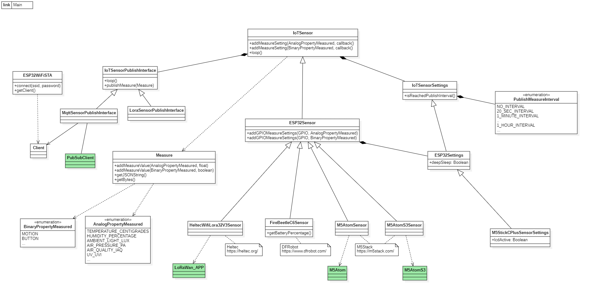

ESP32 Arduino libraries and examples
The provided libraries and examples for the ESP32 cover typical IoT device behaviors, so usually, you only need to copy the example and adjust the settings for your specific project.
Sensors
When a sensor is integrated into a computer system, its behavior generally falls into one of these categories:
- Publishing a value periodically over a network interface
- Publishing a value periodically and also whenever the value changes
- Any of the above but entering sleep mode in between
Libraries
UML Class Diagram
{kind=link}
The main library classes provided are:
- IoTSensor: Abstract base class that handles periodic publishing of sensor values in collaboration with SensorPublishInterface. It allows registering a callback that will be called to retrieve sensor values periodically.
- SensorPublishInterface: Abstract class responsible for sending sensor values over a network interface, with derived classes MqttSensorPublishInterface and LoraSensorPublishInterface.
- ESP32WiFiSTA: Manages WiFi connectivity and provides Client objects needed by some SensorPublishInterface subclasses.
- ESP32Sensor: Extends IoTSensor with the added capability to optionally enter sleep mode between value publications. Objects can also be configured to automatically get sensor values from GPIOs
- FireBeetleC6Sensor, M5AtomSensor...: Extends ESP32Sensor with the additional ability to initialize and display information via an LCD or LED, depending on the board.
Examples
Publishing a value periodically over a network interface
- sketch_M5Stack_Env_III_Unit_Sensor_M5Stack_Atom_MQTT.ino: Ambient MQTT sensor using a M5Stack Atom connected to ENV III unit to publish temperature, humidity and air pressure every minute.
- sketch_DFRobot_UV_Sensor_Heltec_WiFiLora32V3_LORA.ino: UV Lora sensor using a Heltec WiFi Lora 32 V3 connected to GUVA-S12SD UV sensor to publish UV Index every 10 minutes.
Publishing a value periodically and also whenever the value changes
- sketch_M5Stack_DLight_Unit_Sensor_M5Stack_AtomS3_MQTT.ino: Light MQTT sensor using a M5Stack AtomS3 connected to Light Unit to publish light level every 10 minutes and also if light level changes >= abs(300 lux)
- sketch_M5Stack_PIR_Sensor_M5Stack_AtomS3_MQTT.ino: Motion MQTT sensor using a M5Stack AtomS3 connected to PIR unit to publish every 15 minutes and also when it detects movement.
Any of the above but entering sleep mode in between
- sketch_DFRobot_Soil_Moisture_Sensor_FireBeetleC6_MQTT_LowPower.ino: Soil Moisture MQTT sensor using a FireBeetle C6 connected to Soil Moisture sensor to publish soil moisture RH% and battery level every ten minutes and sleeping in between.
- sketch_M5Stack_PIR_Sensor_M5Stack_AtomS3_MQTT_SSL_LowPower.ino: Motion MQTT sensor using a M5Stack AtomS3 connected to PIR unit to publish every 15 minutes and sleep. It detects movement even during sleep mode.
Actuators
When integrated into a computer system, an actuator receives value updates and periodically publishes its current value, including changes. However, actuators cannot enter sleep mode since they must always be ready to receive a value update (the ESP32 cannot wake up from receiving network frames).
Libraries
The main library classes provided are:
- IoTActuator: Abstract base class that manages the publication of values in collaboration with ActuatorPublishInterface. It allows registering callbacks to retrieve and update actuator values.
- ActuatorPublishInterface: Abstract class responsible for sending sensor values over a network interface, with derived classes MqttActuatorPublishInterface. It allows registering a callback that is invoked when an actuator value change command is received.
- ESP32WiFiSTA: Manages WiFi connectivity and provides Client objects needed by some ActuatorPublishInterface subclasses.
- ESP32Actuator: Extends IoTSensor with the added capability to automatically get and update GPIOs values
- M5AtomActuator, M5AtomS3Actuator...: Extends ESP32Actuator with the additional ability to inizialite display information via an LCD or LED, depending on the board.
Examples
- sketch_M5Stack_AtomSocket_Actuator_M5Stack_AtomLite_MQTT_SSL: Socket MQTT actuator using a M5Stack Atom Socket: It’s a sensor that measures current, power, and voltage, and also an actuator capable of turning on/off any device plugged into a socket.
- sketch_M5Stack_AtomSpeaker_Flash_Unit_M5Stack_Atom_MQTT_SSL: Speaker MQTT actuator using a M5Stack Atom Speaker to play any sound.
GPS
When an GPS is integrated into a computer system, its behavior typically involves publishing the current position periodically or when it changes, and maybe enter sleep mode in between.
Libraries
The main library classes provided are:
- IoTGPS: Abstract base class that manages periodic value publishing in collaboration with ActuatorPublishInterface. It allows registering callbacks to retrieve and update actuator values.
- GPSPublishInterface: Abstract class responsible for sending sensor values over a network interface, with derived classes MqttGPSPublishInterface and LoraGPSPublishInterface.
- ESP32WiFiSTA: Manages WiFi connectivity and provides Client objects needed by some GPSPublishInterface subclasses.
- ESP32GPS: Extends IoTGPS with the added capability to optionally enter sleep mode between position publications
- M5AtomGPS, M5AtomS3GPS...: Extends ESP32GPS with the additional ability to initialize and display information via an LCD or LED, depending on the board.
Examples
- sketch_Gps_Heltec_WirelessTracker_Lora_LowPower: Lora GPS using a Heltec Wireless Tracker publishing its position every 10 minutes and sleeping in between.